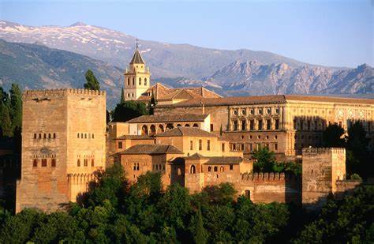

فن العمارة: الجمال والتاريخ
مقدمة
لطالما كانت العمارة مرآة تعكس ثقافة الشعوب وتاريخها، حيث تحمل بين جدرانها أسرار الحضارات وابتكارات الأجيال. فمنذ أقدم العصور، اعتمد الإنسان على البناء كوسيلة للحماية والتعبير عن هويته، مما أدى إلى ظهور مدارس معمارية متنوعة، امتزجت فيها التقاليد المحلية بالتطورات الهندسية والفنية.
يُعرّف مفهوم الفن المعماري بأنّه الفنّ الذي يهتمّ بتكوين وإنشاء الحجوم وأيضاً الفراغات التي تُخصّص من أجل احتضان الوظائف والنشاطات الإنسانيّة وأيضاً الاجتماعيّة على مختلف أصنافها وأنواعها، وبذلك فإنّ مفهوم هذا الفنّ هو انعكاس لأشكال وسمات الإنجازات أكانت ماديّة أم حضاريّة.
في المغرب، تشهد المعالم الأثرية على غنى العمارة التقليدية التي تمتزج فيها الزخارف الهندسية بأساليب البناء المتوارثة، في حين يتجلى التأثير الأندلسي في تفاصيل القصور والمساجد التي ما زالت تحكي قصص حضارات عريقة. وعلى الجانب الآخر، لا يمكن إغفال تأثير العمارة الرومانية التي تركت بصمتها في شمال إفريقيا وأوروبا، حيث تميزت بأقواسها الضخمة، ومدرجاتها الهائلة، وهندستها المتقنة التي ما زالت شاهدة على عظمة هذه الحضارة.
ومع دخول العالم العربي إلى عصر الحداثة، أصبحت المدن تنبض بناطحات السحاب والمباني الذكية التي تحاول الجمع بين الأصالة والتطور.
في هذا المقال، سنأخذك في جولة عبر أروع المعالم والأنماط المعمارية، لنكتشف معًا كيف شكلت الهندسة المعمارية عالمنا عبر العصور.
المعمار الأندلسي
تأثر العالم الإسلامي وأوروبا بالمعمار الأندلسي، حيث يظهر ذلك في قصر الحمراء بغرناطة وجامع قرطبة. يتميز بالحدائق الجميلة والأقواس الفريدة.
تطورت الهندسة والعمارة في الأندلس بصورة كبيرة، ويرجع الفضل في هذا للعديد من العلماء الذين عاشوا آنذلك، على رأسهم العالم أبو بكر الكرجي، وهو عالم رياضيات كبير، وقد طور الكرجي العديد من التطبيقات المختلفة في مجال الهندسة، لا سيما في مجال الهندسة المعمارية، التي كان لها دور كبير في بناء المساجد والمدارس والقصور هناك،[٢] ويمكن توضيح أهم معالم فن العمارة والهندسة في الأندلس فيما يأتي:
جامع قرطبة الكبير:
يعد جامع قرطبة الكبير أحد أقدم المباني في الأندلس، وهو من أكثر الأبنية التي تدل على عظمة العمارة الأندلسية، ويحتوي هذا المسجد على العديد من التقنيات المعمارية والزخارف الإسلامية المبتكرة، التي أصبحت جزءًا مميزًا من العمارة الأندلسية.
أكد العديد من المؤرخين وعلماء الآثار على أهمية وعظمة هذه الفترة التاريخية، مثل ليوبولدو توريس، وهنري تيراس، ومانويل جوميز مورينو،[١] ففي هذه الفترة العظيمة ومن أجل زيادة التجارة والتوسع في الاقتصاد، كان لا بد من زيادة إنتاج السلع والموارد الطبيعية، وكان هذا يتطلب بناء الطرق والموانئ والجسور والسدود والمدن، حيث قام المهندسون المسلمون بالتخطيط واستخدام الهندسة في بناء هذه المرافق، وقد استطاع المهندسون المسلمون بالاستفادة من أفكار الحضارات السابقة، ودمجها بالمعرفة والأدوات الجديدة التي ابتكروها واكتشفوها، من بناء الآلات والأدوات التي ساعدت في تطوير المهارات والمعرفة البشرية

المعمار المغربي التقليدي
يتميز المعمار المغربي بتنوعه الغني، حيث يجمع بين الفسيفساء (الزليج)، والأقواس المزخرفة، والتصاميم الهندسية المعقدة. من أبرز المعالم: قصر آيت بن حدو، والرياضات التقليدية التي تظهر جمال الزخارف.
تنوّعت الحضارات في المغرب؛ إذ احتكت عبر الزمن بكلٍ من الحضارة الإسلاميّة، وحضارة أوروبا، وجنوب الصحراء، ممّا جعل منها لوحةً فنّيّةً متكاملة تمتاز بالعمق التاريخيّ، والشكل الحضاريّ
تأثّرت العمارة المغربيّة في فترة ما بين 1056-1269 م، بالعمارة الأندلسيّة دون إسراف وترف كما في الأندلس، ويرجع ذلك إلى وجود دولة الموحّدين في تلك الحقبة، فاكتسب الفن الجديد جمالاً مميّزاً أثّرعلى بساطة البناء ونبذه لمظاهر الترف تطبيقاً لللزهد والورع، فتميّز البناء في وقتها بالجماليّات البسيطة المتقنة، فعلى سبيل المثال ظهر فنّ صفوف الأقواس الحاملة للسقف بشكلٍ عموديّ ونرى ذلك في جامع عقبة بن نافع في القيروان، وفي جامع قرطبة الكبير، ومن المظاهر الجماليّة نذكرالآتي:[٢]
وجود القبّة فوق المحراب، والتي تتشكل من عدّة أقواس متقاطعة تحوي حشواتٍ جصّية مزخرفة، شكلها هرميّ، والقرميد يغطّيها من الخارج.
شكل الأقواس يأخذ شكل حدوة الفرس الدائري والمُدبّب.
كثرة استخدام الفسيفساء الخزفية في الزخرفة، وخاصةً في واجهات المباني والمآذن، وبلغ استخدام النقوش والزخارف أوجه في زمن دولة المرابطين.
تنوّعت النقوش والزخارف بين استخدام الأشكال الهندسيّة، والعروق النباتيّة، وكتابة الجمل والكلمات على شكل شرائط تلفّ المباني والمساجد، ولقد اعتُمد في ذلك على الخط الكوفي بشكلٍ رئيسيٍ، أمّا خط الثلث فقد استعمل للمرة الأولى في جامع تلمسان

المعمار المغربي الحديث
يعتبرُ مسجد الحسن الثاني في الدار البيضاء من أبرز مباني العمارة المغربيّة المعاصرة، حيث إنّ ارتفاع مئذنته ذات الطابع الأندلسي يبلغ 210م، وهي بذلك تعتبر أعلى مئذنةٍ في العالم، وفيه العديد من الساحات، إحداها للصلاة، وأخرى الوضوء، وفيه مدرسة قرآنية، ومكتبة ومتحف، أمّا أعمدته فملوّنة بالفسيفساء الخزفية. أمّا باقي الأبنية الحديثة في المغرب فتمتاز بالرسم بواسطة الخزف بأشكال هندسية وكتابات خشبية ورخامية، ومما استجدَّ في عمارة المغرب استعمال الليزر للدلالة على القبلة، مع بناء ركائز مضادة للهزّات الأرضية والأمواج البحريّة، كما أنَّ أغلب المساجد تتمتع بسقفٍ مُتحرّكٍ قابل للانفتاح والانغلاق، أما الألوان فهي مُستمدةٌ من البيئة الغنية بألوان التربة والصخور، والأشجار والزهور، أمّا الأبواب والنوافذ فتجدها مصنوعةً من الخشب أو المعدن.
المعمار الروماني
كانت العمارة الرومانية مستوحاة بشكل كبير من العمارة اليونانية والإتروسكان. استعار الرومان العديد من التقنيات المعمارية ، بما في ذلك الأقواس ، واستخدام المكونات الهيدروليكية ، وبناء الأقواس. استند معظم العمارة في روما القديمة إلى الأوامر الكلاسيكية القديمة من الفترة اليونانية.
العمارة الرومانية من أبرز أشكال المعمار التي ظهرت في تاريخنا، حيث أثرت بشكل كبير على العلوم والهندسة والتكنولوجيا، مستمدة الكثير من عناصرها من العمارة اليونانية والإتروسكانية. وعلى الرغم من ذلك، لا تزال العمارة الرومانية رمزًا للابتكار والصمود حتى يومنا هذا.
عند الحديث عن العمارة الرومانية، يتبادر إلى الذهن القنوات المائية التي كانت تزود المدن بالمياه من مصادر بعيدة، حيث كانت هذه المياه تُنقل عبر قنوات مبنية من الحجر، مما جعلها قادرة على الصمود لفترات طويلة.
لا يمكننا أيضًا نسيان الكولوسيوم، المدرج العملاق في وسط روما، والذي يجمع بين الخصائص الهندسية المميزة للمعمار الروماني، من تصميم الأعمدة إلى استخدام المواد البنائية مثل الخرسانة، التي تميزت بمتانتها وقدرتها على التشكل في قوالب مختلفة.
يمكن القول إن أعظم ما يميز العمارة الرومانية هو قبة البانثيون، التي تعتبر أكبر قبة تم بناؤها باستخدام الخرسانة غير المسلحة
المعمار الحديث في العالم العربي
تجمع المدن العربية الحديثة بين العمارة التقليدية والتكنولوجيا الحديثة، مثل برج خليفة في دبي ومسجد الحسن الثاني في الدار البيضاء.

أثر العمارة على البيئة
تساهم العمارة المستدامة في تقليل استهلاك الطاقة وحماية البيئة. تشمل الأمثلة البيوت الذكية والتصاميم التي تعتمد على الإضاءة الطبيعية.
المعمار الإسلامي: جماليات وأسرار
يعكس المعمار الإسلامي التوازن والرمزية من خلال استخدام الزخارف الهندسية المتناظرة والمساجد ذات القباب العالية.

التقنيات التقليدية في البناء
كانت التقنيات التقليدية في بناء القرى والأسوار فعّالة وصديقة للبيئة، حيث استخدمت مواد محلية وتقنيات متينة.

المدن العتيقة في المغرب
تُظهر مدن مثل فاس ومراكش الطابع المعماري التقليدي الذي صمد أمام الزمن، حيث تتسم الأزقة الضيقة والأسواق بطابعها الخاص.